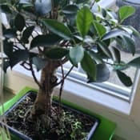
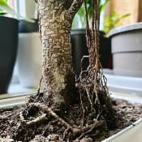
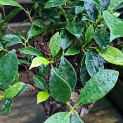

Nom
Exposition en été
Exposition en hiver
Arrosage en été
Arrosage en hiver
Rempotage
Ficus retusaVoir la galerie photo



Je le mets en intérieur ou dehors à partir de la deuxième quinzaine de Mai jusque courant Octobre dans une situation très lumineuse sans soleil direct.
Je le rentre durant les nuits descendant sous les 15°C.
Je le place en intérieur dans une pièce non chauffée ne descendant pas sous les 15°C pas très loin d'une fenêtre.
Je fais moins attention au soleil qui est sans danger.
Je l'arrose de façon modérée à régulière en laissant le substrat sécher un peu sur le haut.
En général par bassinage car, la chaleur suffira à faire sécher la motte assez rapidement sans risque que la moisissure ne s'installe.
Je diminue les arrosages pour ne pas maintenir la motte trop humide.
Il n'aime pas quand l'air est trop sec.
Je mélange du terreau pour plantes d'intérieur après avoir retiré les gros avec du sable de rivière.
Je le garde dans une terrine en terre-cuite de taille moyenne.